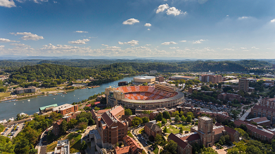
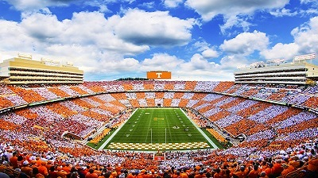
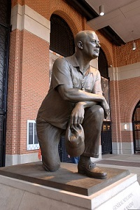

Neyland Stadium
Neyland Stadium serves as the home stadium of the Tennessee Volunteers. The offical capactiy is 102,455, making it seventh largest stadium in the world.


Robert Neyland

Neyland Stadium is named after its designer, Brigadier General Robert Neyland. Neyland served as an officer in the United States Army. Neyland was the Volunteer's head coach on three seperate occasions (1926-1934, 1936-1949, 1946-1952). During his tenure the Volunteers won four national championships and five SEC championships. Neyland holds the record for most wins in Volunteer history with 173 wins in 216 games. 112 of those victories came via shutout.